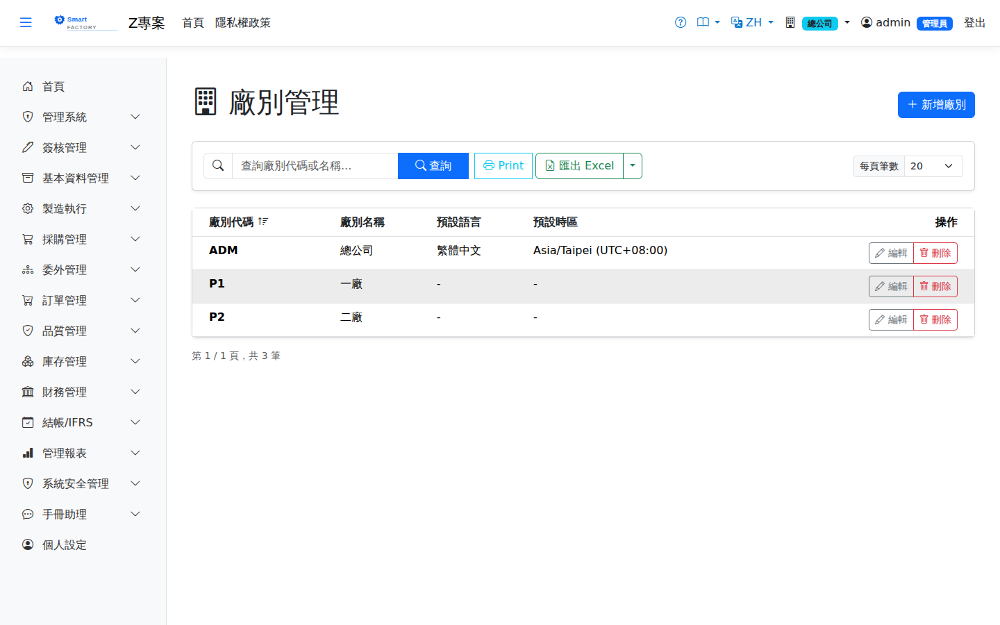
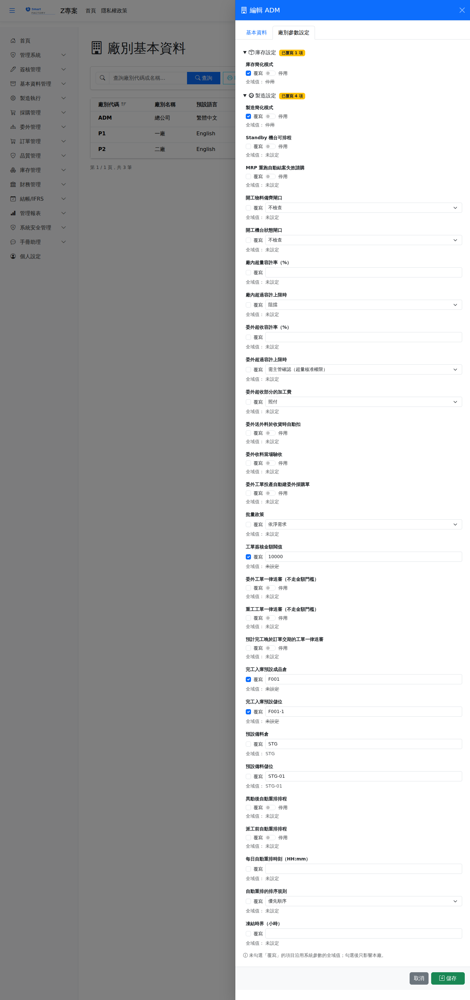

廠別管理維護系統中的Plant management maintains the 廠plants，以及每一廠的預設語系、時區與 in the system, along with each plant's default language, time zone and 參數覆寫parameter overrides。廠別是全系統資料的切分依據：使用者目前在哪一廠，就只看得到那一廠的單據與庫存。. The plant is how data is partitioned system-wide: users see the documents and stock of the plant they are currently in, and no other.

廠別管理畫面截圖（示意，實際欄位/資料依權限與查詢條件而異）Plant management screenshot (illustrative; actual fields and data vary by permission and query criteria)
欄位說明Field reference
| 欄位名稱Field | 必填Required | 說明Guide |
|---|
| 廠別代碼Plant code | 必填Required | 唯一識別碼（例：P01），The unique code (for example P01); 建立後不可變更it cannot be changed once created，所有單據都以它記錄所屬廠。, and every document records it as the plant it belongs to. |
| 廠別名稱Plant name | 必填Required | 中文名稱，顯示於畫面右上角的廠別切換與各式報表。The Chinese name, shown in the plant switcher at the top right and on reports. |
| 英文名稱Name (EN) | | 介面為英文時顯示的名稱。The name shown when the interface is in English. |
| 中／英文地址Address (ZH / EN) | | 列印單據時的抬頭地址，兩種語系各一份。The address printed on documents, one for each language. |
| 預設語系Default language | | 使用者沒有個人語系（使用者維護選「依廠別預設」）時，登入或切換到本廠採用的介面語言；有個人語系的以個人為準。The interface language used when a user with no personal language (set to "Follow plant default" in user maintenance) signs in or switches to this plant; a personal language, when set, takes priority. |
| 預設時區Default time zone | | 畫面上的時間顯示依此換算。系統內部一律以 UTC 儲存，因此Times on screen are converted using it. Internally everything is stored in UTC, so 改時區只影響顯示changing the time zone only affects the display，不會改動既有資料。下拉列出系統認得的所有時區，可直接輸入關鍵字尋找（例如 Taipei）；存檔時會驗證，認不得的值存不進去。這一層 and never alters the stored data. The dropdown lists every time zone the system knows and can be searched by keyword — "Taipei", for example — and the value is validated on save, so one the system does not recognize cannot be stored. This level 優先於使用者的個人時區takes precedence over each person's own time zone：這裡一旦設了，該廠使用者在「個人設定」設的時區就不生效（見: once it is set, the time zone people of this plant chose under Personal Settings has no effect (see 個人設定Personal Settings）。). |
廠別參數設定Plant parameter settings
編輯廠別時，表單上有「基本資料」與「廠別參數設定」兩個頁籤。後者讓您When editing a plant the form has two tabs: "Basic information" and "Plant parameter settings". The second lets you 針對這一廠覆寫全域的系統參數override the global system parameters for this one plant，分為庫存與製造兩區，包含庫存簡化模式、製造簡化模式、開工物料備齊閘口、開工機台狀態閘口、批量政策、工單簽核金額門檻、工單強制送審條件（委外工單／重工工單／預計完工晚於訂單交期，開啟後符合者一律送審、不走金額門檻；須該廠有工單簽核流程才會送出）、完成品入庫倉／儲位、自動重排排程（異動後／派工前／每日時刻、排序規則、凍結時界）等。, in two sections — inventory and manufacturing — covering simplified inventory mode, simplified manufacturing mode, the material-ready gate at start, the machine status gate at start, the lot policy, the work-order approval amount threshold, the mandatory work-order approval conditions (outsourced orders / rework orders / orders planned to finish after the order due date — when on, matching orders are always submitted regardless of the amount threshold; a work order approval flow must exist for them to be sent), the finished-goods warehouse and location, automatic rescheduling (after changes / before dispatch / daily time, sequencing rule, freeze window), and so on.

編輯廠別 → 「廠別參數設定」頁籤：每個參數左側是「覆寫」核取方塊，下方灰字為目前的全域值Editing a plant, on the "Plant parameter settings" tab: each parameter has an "Override" checkbox on the left, with the current global value in grey underneath
| 畫面上的標示What you see | 意義What it means |
|---|
| 「覆寫」核取方塊The "Override" checkbox | 勾選＝本廠自訂這個參數；不勾＝沿用全域的系統參數值。Ticked means this plant sets the parameter itself; unticked means the global system parameter applies. |
| 欄位下方的「全域值」The "Global value" note under the field | 目前全域系統參數的值。已覆寫時會加上刪除線，表示本廠不採用它。The current global value. When the parameter is overridden it is struck through, showing that this plant does not use it. |
| 區塊標題旁的黃色標記The yellow badge beside a section heading | 該區已覆寫的參數個數；顯示「全部繼承」表示這一區完全沿用全域設定。How many parameters in that section are overridden; "All inherited" means the section follows the global settings entirely. |
值改了但沒勾「覆寫」＝不會生效：Changing a value without ticking "Override" has no effect:未勾覆寫時，右側的值控制項仍然可以點、可以改，但存檔時系統 while "Override" is unticked the control on the right can still be clicked and changed, but on save the system 會忽略它，並清掉本廠既有的覆寫ignores it and clears any existing override for this plant。判斷依據永遠是核取方塊，不是您在值控制項上做了什麼。要取消覆寫、改回沿用全域，就是把核取方塊取消勾選後存檔。. The checkbox is always what counts, not what you did to the value control. To drop an override and go back to the global value, untick the box and save.
開工機台狀態閘口：Machine status gate at start:上工（桌機與手機）時檢查機台狀態。機台不在可排程狀態（故障停機、保養中、外修中等；「待機」依「Standby 機台可排程」參數）時—— checked when work is started (desktop and mobile). If the machine is not in a schedulable state (breakdown, maintenance, external repair and so on; "standby" follows the "Standby Machines Schedulable" parameter) —不檢查None照常開工； starts as usual; 警告Warning（未設定時的預設）照常開工但提醒確認機台狀態； (the default when not set) starts but reminds the user to check the machine status; 阻擋Block不允許開工。建議先用「警告」一段時間，確認現場在機台修好後都會更新狀態，再改成「阻擋」，以免機台已修好卻因狀態沒改而無法開工。 does not allow the start. We suggest running with "Warning" for a while, until the shop floor reliably updates the status once a machine is repaired, before switching to "Block" — otherwise a repaired machine whose status was never updated cannot be started.
超量生產與委外超收：Over-production and outsource over-receipt:「廠內超量容許率」讓報工的合格數累計可以超過派工量到該百分比（例如 3% 時派工 100 最多報到 103），未設定＝0，一個都不能多；再超過時依「廠內超過容許上限時」拒收（未設定時的預設），或需主管確認——只有角色在「手機模組權限」被授予「超量核准」的人能報（桌機與手機同一個權限）。委外收貨同樣有「委外超收容許率」與「委外超過容許上限時」（未設定時預設需主管確認），另可設定「委外超收部分的加工費」：照付（預設）或不付——不付時應付發票只算到委外採購量，收貨單明細備註會記下合約單價與計費量。 "In-plant over-production tolerance" lets the cumulative good quantity reported exceed the dispatch quantity by that percentage (at 3%, a dispatch of 100 can be reported up to 103); not set = 0, not a single unit more. Beyond that, "In-plant: beyond the tolerance" either rejects it (the default) or requires supervisor confirmation — only roles granted "Over-quantity approval" under Mobile Module Permissions can report it (the same right applies on desktop and mobile). Outsource receipts have the same pair, "Outsource over-receipt tolerance" and "Outsource: beyond the tolerance" (default: supervisor confirmation), plus "Processing fee for the over-received quantity": Pay (default) or Do not pay — with "Do not pay" the AP invoice covers only the ordered quantity, and the receipt line remarks record the contract price and the billed quantity.
委外簡化（預設皆關）：Simplified outsourcing (all off by default):「委外送外料於收貨時自動扣」開啟時，不必另開委外發料單：每次確認委外收貨，系統依工單用料 × 累計收回量 ÷ 工單數量算出應發量，扣掉已發未退的部分後自動產生並過帳一張委外發料單（從品號類別的預設倉儲出庫，取不到會擋下並說明）。整品委外扣工單全部用料、工序委外只扣該工序的用料；先前手動發過的不會重扣。「委外收料當場驗收」開啟時，手機委外收料每一行多一欄不良數：送出即完成品檢（MIL-STD-1916，Ac=0），不良 0＝合格，直接入一般倉（明細儲位，沒填用品號類別預設儲位）並回寫委外派工完工量；有不良＝整批入本廠待驗倉，依不合格品處置辦理，不算完工。免驗品號直接入一般倉。不必再經「入庫上架 → 進料檢驗」，非簡化廠也適用；桌機收貨單仍走原流程。「委外工單投產自動建委外採購單」開啟時，委外工單投產即依唯一有效報價廠商建一張已確認的委外採購單（細節見委外採購單說明）。 When "Deduct outsource send-out materials automatically at receipt" is on, no separate outsource material issue is needed: each time an outsource receipt is confirmed, the system works out the quantity due as work-order material × cumulative quantity received ÷ work-order quantity, subtracts what has already been issued (net of returns), and creates and posts an outsource issue slip for the difference (taken from the product category's default location; if there is none, it stops and says so). A fully outsourced order deducts all its materials, an outsourced operation only that operation's; anything issued manually earlier is not deducted again. When "Inspect outsource deliveries at receipt" is on, each line of mobile Outsource Receiving gets a Defects field: submitting completes the inspection (MIL-STD-1916, Ac=0). 0 defects = pass, stocked straight into a normal warehouse (the line location, or the product category default) and added to the outsourced dispatch's completed quantity; any defect = the whole lot goes to the plant's quarantine warehouse for nonconformance handling and does not count as completed. Inspection-exempt products go straight to a normal warehouse. No "Putaway → Incoming Inspection" steps are needed, even in non-simplified plants; desktop receipts keep the normal flow. When "Create the outsource PO automatically when an outsourced work order is released" is on, releasing an outsourced work order creates a Confirmed outsource PO for the single supplier with a valid quotation (see the Outsource PO page for details).
操作步驟Steps
新增廠別Adding a plant
1點選左側選單「管理系統 > 廠別管理」，按「查詢」載入現有廠別。Choose "System Administration > Plant Management" in the left-hand menu and click "Search" to load the existing plants.
2點「新增」，填入廠別代碼與名稱，設定預設語系與時區後儲存。Click "Add", enter the plant code and name, set the default language and time zone, and save.
3新廠建立後，還要到「角色管理」把這個廠勾進相關角色的可用廠別，人員才進得去。Once the plant exists, tick it into the relevant roles' allowed plants under "Role Management"; until then nobody can enter it.
4新廠通常還需要自己的倉庫、儲位、單號設定與會計期間，請至各主檔畫面建立。A new plant usually needs its own warehouses, storage locations, document number settings and accounting periods, created on the respective master-data screens.
為單一廠開啟簡化模式Turning on simplified mode for one plant
1編輯該廠，切到「廠別參數設定」頁籤。Open the plant and switch to the "Plant parameter settings" tab.
2找到製造簡化模式，先Find simplified manufacturing mode, 勾選「覆寫」tick "Override" first，再把右側開關切成開啟。, then switch the toggle on the right to on.
3存檔後重新開啟，區塊標題旁會出現「已覆寫 N 項」的黃色標記，代表設定已生效。Reopen it after saving and the yellow "N overridden" badge appears beside the section heading, showing that the override is in place.
刪除廠別Deleting a plant
| 擋下的原因Reason it is blocked | 處理方式What to do |
|---|
| 有使用者目前正在這個廠Users are currently in this plant | 請對方切換到其他廠後再刪。Ask them to switch to another plant first. |
| 有組織單位指定這個廠Organization units point to it | 到「組織架構」把那些單位的廠別改掉或清空。Change or clear the plant on those units under "Organization Structure". |
| 有角色把它列為可用廠別Roles list it as an allowed plant | 到「角色管理」取消勾選。Untick it under "Role Management". |
已經上線運作過的廠實務上刪不掉，也不該刪——單據、庫存與傳票都掛著它。要停用一個廠，做法是把它從所有角色的可用廠別中移除，使用者就再也切不進去。A plant that has been in use cannot in practice be deleted, and should not be: documents, stock and journal entries all reference it. To retire one, remove it from every role's allowed plants and nobody can switch into it again.
匯出Export
查詢結果可匯出 Excel（.xlsx）、CSV 或 JSON，內容為廠別代碼、名稱、預設語系與預設時區。The results can be exported as Excel (.xlsx), CSV or JSON, containing the plant code, name, default language and default time zone.